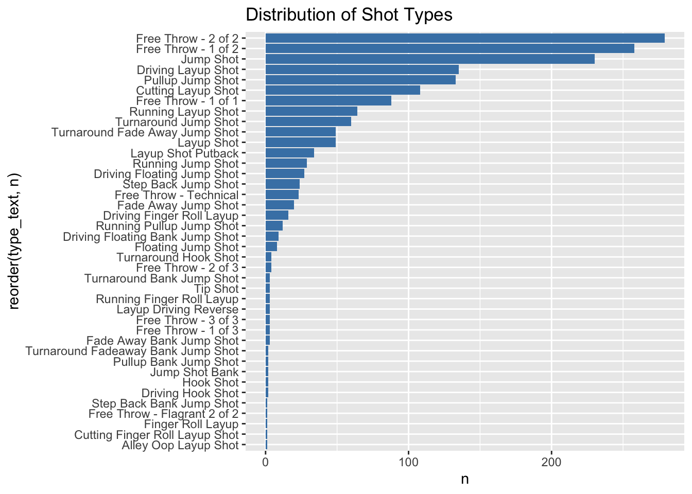
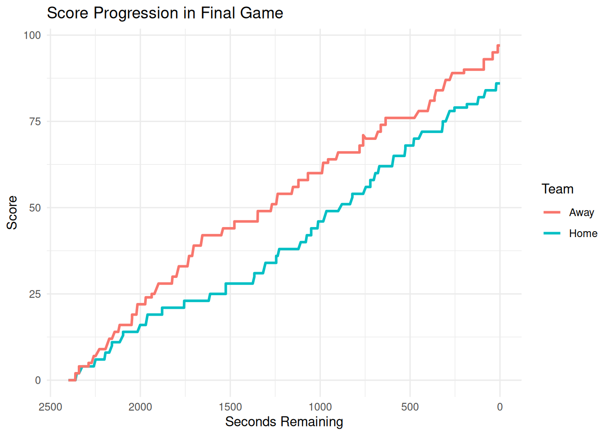

Karyna S.
# A tibble: 6 × 62
game_play_number id sequence_number type_id type_text text away_score
<int> <dbl> <int> <int> <chr> <chr> <int>
1 1 4.02e 9 4 615 Jumpball NaLy… 0
2 2 4.02e 9 7 131 Pullup J… Kahl… 0
3 3 4.02e 9 8 155 Defensiv… Jack… 0
4 4 4.02e 9 9 95 Layup Sh… NaLy… 0
5 5 4.02e10 10 156 Offensiv… NaLy… 0
6 6 4.02e10 11 125 Layup Sh… NaLy… 2
# ℹ 55 more variables: home_score <int>, period_number <int>,
# period_display_value <chr>, clock_display_value <chr>, scoring_play <lgl>,
# score_value <int>, team_id <int>, athlete_id_1 <int>, athlete_id_2 <int>,
# athlete_id_3 <int>, wallclock <chr>, shooting_play <lgl>,
# coordinate_x_raw <dbl>, coordinate_y_raw <dbl>, game_id <int>,
# season <int>, season_type <int>, home_team_id <int>, home_team_name <chr>,
# home_team_mascot <chr>, home_team_abbrev <chr>, home_team_name_alt <chr>, … [1] "game_play_number" "id"
[3] "sequence_number" "type_id"
[5] "type_text" "text"
[7] "away_score" "home_score"
[9] "period_number" "period_display_value"
[11] "clock_display_value" "scoring_play"
[13] "score_value" "team_id"
[15] "athlete_id_1" "athlete_id_2"
[17] "athlete_id_3" "wallclock"
[19] "shooting_play" "coordinate_x_raw"
[21] "coordinate_y_raw" "game_id"
[23] "season" "season_type"
[25] "home_team_id" "home_team_name"
[27] "home_team_mascot" "home_team_abbrev"
[29] "home_team_name_alt" "away_team_id"
[31] "away_team_name" "away_team_mascot"
[33] "away_team_abbrev" "away_team_name_alt"
[35] "game_spread" "home_favorite"
[37] "game_spread_available" "home_team_spread"
[39] "qtr" "time"
[41] "clock_minutes" "clock_seconds"
[43] "home_timeout_called" "away_timeout_called"
[45] "half" "game_half"
[47] "lead_qtr" "lead_half"
[49] "start_quarter_seconds_remaining" "start_half_seconds_remaining"
[51] "start_game_seconds_remaining" "end_quarter_seconds_remaining"
[53] "end_half_seconds_remaining" "end_game_seconds_remaining"
[55] "period" "lag_qtr"
[57] "lag_half" "coordinate_x"
[59] "coordinate_y" "game_date"
[61] "game_date_time" "type_abbreviation" Data summary
wehop_dt [121,342 × 62] (S3: wehoop_data/tbl_df/tbl/data.table/data.frame)
$ game_play_number : int [1:121342] 1 2 3 4 5 6 7 8 9 10 ...
$ id : num [1:121342] 4.02e+09 4.02e+09 4.02e+09 4.02e+09 4.02e+10 ...
$ sequence_number : int [1:121342] 4 7 8 9 10 11 12 13 15 16 ...
$ type_id : int [1:121342] 615 131 155 95 156 125 131 44 98 99 ...
$ type_text : chr [1:121342] "Jumpball" "Pullup Jump Shot" "Defensive Rebound" "Layup Shot" ...
$ text : chr [1:121342] "NaLyssa Smith vs. Natasha Mack (Alyssa Thomas gains possession)" "Kahleah Copper misses 24-foot three point pullup jump shot" "Jackie Young defensive rebound" "NaLyssa Smith misses layup" ...
$ away_score : int [1:121342] 0 0 0 0 0 2 2 2 3 4 ...
$ home_score : int [1:121342] 0 0 0 0 0 0 2 2 2 2 ...
$ period_number : int [1:121342] 1 1 1 1 1 1 1 1 1 1 ...
$ period_display_value : chr [1:121342] "1st Quarter" "1st Quarter" "1st Quarter" "1st Quarter" ...
$ clock_display_value : chr [1:121342] "10:00" "9:48" "9:45" "9:28" ...
$ scoring_play : logi [1:121342] FALSE FALSE FALSE FALSE FALSE TRUE ...
$ score_value : int [1:121342] 0 0 0 0 0 2 2 0 1 1 ...
$ team_id : int [1:121342] 11 11 17 17 17 17 11 11 17 17 ...
$ athlete_id_1 : int [1:121342] 4068042 2998938 4065870 4398776 4398776 4398776 5274110 4068042 3149391 3149391 ...
$ athlete_id_2 : int [1:121342] 4398776 NA NA NA NA NA NA NA NA NA ...
$ athlete_id_3 : int [1:121342] 2529140 NA NA NA NA NA NA NA NA NA ...
$ wallclock : chr [1:121342] "2025-10-11T00:08:16Z" "2025-10-11T00:08:25Z" "2025-10-11T00:08:28Z" "2025-10-11T00:08:46Z" ...
$ shooting_play : logi [1:121342] FALSE TRUE FALSE TRUE FALSE TRUE ...
$ coordinate_x_raw : num [1:121342] -2.15e+08 3.50e+01 3.50e+01 2.80e+01 2.80e+01 ...
$ coordinate_y_raw : num [1:121342] -2.15e+08 2.20e+01 2.20e+01 1.00 1.00 ...
$ game_id : int [1:121342] 401820329 401820329 401820329 401820329 401820329 401820329 401820329 401820329 401820329 401820329 ...
$ season : int [1:121342] 2025 2025 2025 2025 2025 2025 2025 2025 2025 2025 ...
$ season_type : int [1:121342] 3 3 3 3 3 3 3 3 3 3 ...
$ home_team_id : int [1:121342] 11 11 11 11 11 11 11 11 11 11 ...
$ home_team_name : chr [1:121342] "Phoenix" "Phoenix" "Phoenix" "Phoenix" ...
$ home_team_mascot : chr [1:121342] "Mercury" "Mercury" "Mercury" "Mercury" ...
$ home_team_abbrev : chr [1:121342] "PHX" "PHX" "PHX" "PHX" ...
$ home_team_name_alt : chr [1:121342] "Phoenix" "Phoenix" "Phoenix" "Phoenix" ...
$ away_team_id : int [1:121342] 17 17 17 17 17 17 17 17 17 17 ...
$ away_team_name : chr [1:121342] "Las Vegas" "Las Vegas" "Las Vegas" "Las Vegas" ...
$ away_team_mascot : chr [1:121342] "Aces" "Aces" "Aces" "Aces" ...
$ away_team_abbrev : chr [1:121342] "LV" "LV" "LV" "LV" ...
$ away_team_name_alt : chr [1:121342] "Las Vegas" "Las Vegas" "Las Vegas" "Las Vegas" ...
$ game_spread : num [1:121342] 2.5 2.5 2.5 2.5 2.5 2.5 2.5 2.5 2.5 2.5 ...
$ home_favorite : logi [1:121342] TRUE TRUE TRUE TRUE TRUE TRUE ...
$ game_spread_available : logi [1:121342] FALSE FALSE FALSE FALSE FALSE FALSE ...
$ home_team_spread : num [1:121342] 2.5 2.5 2.5 2.5 2.5 2.5 2.5 2.5 2.5 2.5 ...
$ qtr : int [1:121342] 1 1 1 1 1 1 1 1 1 1 ...
$ time : chr [1:121342] "10:00" "9:48" "9:45" "9:28" ...
$ clock_minutes : int [1:121342] 10 9 9 9 9 9 9 9 9 9 ...
$ clock_seconds : num [1:121342] 0 48 45 28 22 21 14 1 1 1 ...
$ home_timeout_called : logi [1:121342] FALSE FALSE FALSE FALSE FALSE FALSE ...
$ away_timeout_called : logi [1:121342] FALSE FALSE FALSE FALSE FALSE FALSE ...
$ half : int [1:121342] 1 1 1 1 1 1 1 1 1 1 ...
$ game_half : int [1:121342] 1 1 1 1 1 1 1 1 1 1 ...
$ lead_qtr : int [1:121342] 1 1 1 1 1 1 1 1 1 1 ...
$ lead_half : int [1:121342] 1 1 1 1 1 1 1 1 1 1 ...
$ start_quarter_seconds_remaining: num [1:121342] 600 588 585 568 562 561 554 541 541 541 ...
$ start_half_seconds_remaining : num [1:121342] 1200 1188 1185 1168 1162 ...
$ start_game_seconds_remaining : num [1:121342] 2400 2388 2385 2368 2362 ...
$ end_quarter_seconds_remaining : num [1:121342] 600 585 568 562 561 554 541 541 541 523 ...
$ end_half_seconds_remaining : num [1:121342] 1200 1185 1168 1162 1161 ...
$ end_game_seconds_remaining : num [1:121342] 2400 2385 2368 2362 2361 ...
$ period : int [1:121342] 1 1 1 1 1 1 1 1 1 1 ...
$ lag_qtr : int [1:121342] NA 1 1 1 1 1 1 1 1 1 ...
$ lag_half : int [1:121342] NA 1 1 1 1 1 1 1 1 1 ...
$ coordinate_x : num [1:121342] 2.15e+08 1.98e+01 -1.98e+01 -4.08e+01 -4.08e+01 ...
$ coordinate_y : num [1:121342] 214748365 -10 10 3 3 ...
$ game_date : Date[1:121342], format: "2025-10-10" "2025-10-10" ...
$ game_date_time : POSIXct[1:121342], format: "2025-10-10 20:00:00" "2025-10-10 20:00:00" ...
$ type_abbreviation : chr [1:121342] NA NA NA NA ... game_play_number id
0 0
sequence_number type_id
0 0
type_text text
0 0
away_score home_score
0 0
period_number period_display_value
0 0
clock_display_value scoring_play
0 0
score_value team_id
0 2486
athlete_id_1 athlete_id_2
11041 85455
athlete_id_3 wallclock
120555 0
shooting_play coordinate_x_raw
0 0
coordinate_y_raw game_id
0 0
season season_type
0 0
home_team_id home_team_name
0 0
home_team_mascot home_team_abbrev
0 0
home_team_name_alt away_team_id
0 0
away_team_name away_team_mascot
0 0
away_team_abbrev away_team_name_alt
0 0
game_spread home_favorite
0 0
game_spread_available home_team_spread
0 0
qtr time
0 0
clock_minutes clock_seconds
0 0
home_timeout_called away_timeout_called
0 0
half game_half
0 0
lead_qtr lead_half
312 312
start_quarter_seconds_remaining start_half_seconds_remaining
0 0
start_game_seconds_remaining end_quarter_seconds_remaining
0 312
end_half_seconds_remaining end_game_seconds_remaining
312 312
period lag_qtr
0 312
lag_half coordinate_x
312 0
coordinate_y game_date
0 0
game_date_time type_abbreviation
0 121342 game_play_number id sequence_number type_id
Min. : 1.0 Min. :4.017e+09 Min. : 3.0 Min. : 0.0
1st Qu.: 98.0 1st Qu.:4.017e+11 1st Qu.:146.0 1st Qu.: 92.0
Median :195.0 Median :4.017e+11 Median :289.0 Median :122.0
Mean :195.9 Mean :3.402e+11 Mean :290.6 Mean :176.6
3rd Qu.:292.0 3rd Qu.:4.017e+11 3rd Qu.:432.0 3rd Qu.:155.0
Max. :502.0 Max. :4.018e+11 Max. :750.0 Max. :615.0
type_text text away_score home_score
Length:121342 Length:121342 Min. : 0.00 Min. : 0.00
Class :character Class :character 1st Qu.: 21.00 1st Qu.: 22.00
Mode :character Mode :character Median : 41.00 Median : 42.00
Mean : 41.77 Mean : 42.95
3rd Qu.: 61.00 3rd Qu.: 63.00
Max. :151.00 Max. :131.00
period_number period_display_value clock_display_value scoring_play
Min. :1.000 Length:121342 Length:121342 Mode :logical
1st Qu.:2.000 Class :character Class :character FALSE:93890
Median :3.000 Mode :character Mode :character TRUE :27452
Mean :2.549
3rd Qu.:4.000
Max. :6.000
score_value team_id athlete_id_1 athlete_id_2
Min. :0.0000 Min. : 3 Min. : 14 Min. : 869
1st Qu.:0.0000 1st Qu.: 8 1st Qu.:2987891 1st Qu.:2987891
Median :0.0000 Median : 14 Median :3907781 Median :3906972
Mean :0.4209 Mean : 9847 Mean :3506601 Mean :3510071
3rd Qu.:0.0000 3rd Qu.: 18 3rd Qu.:4399415 3rd Qu.:4398935
Max. :3.0000 Max. :131247 Max. :5279789 Max. :5279789
NA's :2486 NA's :11041 NA's :85455
athlete_id_3 wallclock shooting_play coordinate_x_raw
Min. : 869 Length:121342 Mode :logical Min. :-214748340
1st Qu.:2529205 Class :character FALSE:67817 1st Qu.: 6
Median :3142328 Mode :character TRUE :53525 Median : 24
Mean :3298249 Mean : -43690477
3rd Qu.:4281929 3rd Qu.: 27
Max. :5278237 Max. : 50
NA's :120555
coordinate_y_raw game_id season season_type
Min. :-214748365 Min. :401736112 Min. :2025 Min. :2.000
1st Qu.: 1 1st Qu.:401736188 1st Qu.:2025 1st Qu.:2.000
Median : 5 Median :401736265 Median :2025 Median :2.000
Mean : -43690493 Mean :401742942 Mean :2025 Mean :2.078
3rd Qu.: 14 3rd Qu.:401736344 3rd Qu.:2025 3rd Qu.:2.000
Max. : 77 Max. :401820340 Max. :2025 Max. :3.000
home_team_id home_team_name home_team_mascot home_team_abbrev
Min. : 3 Length:121342 Length:121342 Length:121342
1st Qu.: 8 Class :character Class :character Class :character
Median : 14 Mode :character Mode :character Mode :character
Mean : 9873
3rd Qu.: 18
Max. :131246
home_team_name_alt away_team_id away_team_name away_team_mascot
Length:121342 Min. : 3 Length:121342 Length:121342
Class :character 1st Qu.: 8 Class :character Class :character
Mode :character Median : 14 Mode :character Mode :character
Mean : 9894
3rd Qu.: 18
Max. :131247
away_team_abbrev away_team_name_alt game_spread home_favorite
Length:121342 Length:121342 Min. :2.5 Mode:logical
Class :character Class :character 1st Qu.:2.5 TRUE:121342
Mode :character Mode :character Median :2.5
Mean :2.5
3rd Qu.:2.5
Max. :2.5
game_spread_available home_team_spread qtr time
Mode :logical Min. :2.5 Min. :1.000 Length:121342
FALSE:121342 1st Qu.:2.5 1st Qu.:2.000 Class :character
Median :2.5 Median :3.000 Mode :character
Mean :2.5 Mean :2.549
3rd Qu.:2.5 3rd Qu.:4.000
Max. :2.5 Max. :6.000
clock_minutes clock_seconds home_timeout_called away_timeout_called
Min. : 0.000 Min. : 0.00 Mode :logical Mode :logical
1st Qu.: 2.000 1st Qu.:12.00 FALSE:121342 FALSE:121342
Median : 4.000 Median :28.00
Mean : 4.236 Mean :27.77
3rd Qu.: 7.000 3rd Qu.:43.00
Max. :10.000 Max. :59.90
half game_half lead_qtr lead_half
Min. :1.000 Min. :1.000 Min. :1.000 Min. :1.000
1st Qu.:1.000 1st Qu.:1.000 1st Qu.:2.000 1st Qu.:1.000
Median :2.000 Median :2.000 Median :3.000 Median :2.000
Mean :1.515 Mean :1.515 Mean :2.553 Mean :1.516
3rd Qu.:2.000 3rd Qu.:2.000 3rd Qu.:4.000 3rd Qu.:2.000
Max. :2.000 Max. :2.000 Max. :6.000 Max. :2.000
NA's :312 NA's :312
start_quarter_seconds_remaining start_half_seconds_remaining
Min. : 0.0 Min. : 0.0
1st Qu.:128.0 1st Qu.: 273.0
Median :279.0 Median : 583.0
Mean :281.9 Mean : 572.4
3rd Qu.:431.0 3rd Qu.: 865.0
Max. :600.0 Max. :1200.0
start_game_seconds_remaining end_quarter_seconds_remaining
Min. : 0 Min. : 0.0
1st Qu.: 563 1st Qu.:128.0
Median :1164 Median :278.0
Mean :1155 Mean :281.2
3rd Qu.:1759 3rd Qu.:430.0
Max. :2400 Max. :600.0
NA's :312
end_half_seconds_remaining end_game_seconds_remaining period
Min. : 0.0 Min. : 0 Min. :1.000
1st Qu.: 272.0 1st Qu.: 562 1st Qu.:2.000
Median : 583.0 Median :1161 Median :3.000
Mean : 570.9 Mean :1152 Mean :2.549
3rd Qu.: 862.0 3rd Qu.:1753 3rd Qu.:4.000
Max. :1200.0 Max. :2400 Max. :6.000
NA's :312 NA's :312
lag_qtr lag_half coordinate_x coordinate_y
Min. :1.000 Min. :1.000 Min. :-214748407 Min. :-214748365
1st Qu.:2.000 1st Qu.:1.000 1st Qu.: -38 1st Qu.: -8
Median :3.000 Median :2.000 Median : -14 Median : 0
Mean :2.546 Mean :1.513 Mean : -4390819 Mean : -4390818
3rd Qu.:4.000 3rd Qu.:2.000 3rd Qu.: 36 3rd Qu.: 6
Max. :6.000 Max. :2.000 Max. : 214748407 Max. : 214748365
NA's :312 NA's :312
game_date game_date_time type_abbreviation
Min. :2025-05-16 Min. :2025-05-16 19:30:00 Length:121342
1st Qu.:2025-06-18 1st Qu.:2025-06-18 19:00:00 Class :character
Median :2025-07-24 Median :2025-07-24 19:00:00 Mode :character
Mean :2025-07-20 Mean :2025-07-21 08:41:34
3rd Qu.:2025-08-21 3rd Qu.:2025-08-21 22:00:00
Max. :2025-10-10 Max. :2025-10-10 20:00:00
Code
# A tibble: 1 × 2
total_games total_plays
<int> <int>
1 312 121342# A tibble: 1 × 1
scoring_plays
<int>
1 27452Code
# A tibble: 10 × 2
athlete_id_1 points
<int> <int>
1 3149391 1263
2 3142191 1100
3 4065870 972
4 3917450 906
5 1068 870
6 3065570 855
7 3058901 839
8 4281929 826
9 2566106 811
10 2529140 791Data Exploration
Preliminary data exploration
Code
# A tibble: 176 × 3
athlete_id_1 total_points total_plays
<int> <int> <int>
1 3149391 1263 780
2 3142191 1100 577
3 4065870 972 525
4 3917450 906 508
5 1068 870 451
6 3065570 855 487
7 3058901 839 464
8 4281929 826 470
9 2566106 811 472
10 2529140 791 468
# ℹ 166 more rowsUsing coordinates to map players’ shot completion
Code
#Top three WNBA players in different positions by points
wilson <- 3149391
collier <- 3917450
ionescu <- 4066533
#Dividing by player id and position
df <- wnba %>%
filter(scoring_play == TRUE) %>%
filter(athlete_id_1 %in% c(ionescu, wilson, collier)) %>%
select(athlete_id_1, type_text, coordinate_x_raw, coordinate_y_raw) %>%
mutate(player = case_when(
athlete_id_1 == ionescu ~ "Sabrina Ionescu",
athlete_id_1 == wilson ~ "A'ja Wilson",
athlete_id_1 == collier ~ "Napheesa Collier")) %>%
mutate(position = case_when(
player == "A'ja Wilson" ~ "Center",
player == "Napheesa Collier" ~ "Forward",
player == "Sabrina Ionescu" ~ "Guard"
)) %>%
mutate(coordinate_y_raw = coordinate_y_raw + 4)
head(df)# A tibble: 6 × 6
athlete_id_1 type_text coordinate_x_raw coordinate_y_raw player position
<int> <chr> <dbl> <dbl> <chr> <chr>
1 3149391 Free Throw - 1… 25 17.8 A'ja … Center
2 3149391 Free Throw - 2… 25 17.8 A'ja … Center
3 3149391 Pullup Jump Sh… 25 14 A'ja … Center
4 3149391 Driving Layup … 21 6 A'ja … Center
5 3149391 Free Throw - 1… 25 17.8 A'ja … Center
6 3149391 Running Layup … 21 6 A'ja … Center Code

Final game play by play visualization
Code
wnba2 <- wnba %>%
filter(game_id == 401820329)
ggplot(wnba2, aes(x = start_game_seconds_remaining, y = home_score, color = "Home")) +
geom_line(size = 1) +
geom_line(aes(y = away_score, color = "Away"), size = 1) +
scale_x_reverse() +
labs( title = "Score Progression in Final Game", x = "Seconds Remaining", y = "Score", color = "Team" ) +
theme_minimal()
Code
player_stats <- wnba_player_box %>%
group_by(athlete_display_name) %>%
summarize(
avg_ppg = mean(points, na.rm = TRUE),
avg_blocks = mean(blocks, na.rm = TRUE),
avg_rebounds = mean((offensive_rebounds + defensive_rebounds), na.rm = TRUE),
avg_assists = mean(assists, na.rm = TRUE),
avg_steals = mean(steals, na.rm = TRUE),
)
player_stats# A tibble: 185 × 6
athlete_display_name avg_ppg avg_blocks avg_rebounds avg_assists avg_steals
<chr> <dbl> <dbl> <dbl> <dbl> <dbl>
1 A'ja Wilson 23.8 2.30 9.98 3.09 1.70
2 Aaliyah Edwards 5.39 0.389 3.67 0.556 0.639
3 Aaliyah Nye 3.38 0.18 1.34 0.48 0.26
4 Aari McDonald 9.90 0.238 2.38 4.52 1.24
5 Aerial Powers 5 0.111 2.83 1.22 0.611
6 Ajae Petty 0 0 0.5 0 0
7 Alanna Smith 9.29 1.84 5.10 2.76 1.27
8 Alexis Prince 2 0 8 1 0
9 Alissa Pili 2.15 0.05 0.95 0.15 0.1
10 Aliyah Boston 14.5 0.833 8.69 3.78 1.07
# ℹ 175 more rowsCode
player_sd_stats <- player_stats %>%
mutate(
sd_ppg = scale(avg_ppg),
sd_blocks = scale(avg_blocks),
sd_rebounds = scale(avg_rebounds),
sd_assists = scale(avg_assists),
sd_steals = scale(avg_steals)
) %>%
rowwise() %>%
mutate(
overall_impact = mean(c(sd_ppg, sd_blocks, sd_rebounds, sd_assists, sd_steals))
) %>%
ungroup() %>%
arrange(desc(overall_impact)) %>%
select(c(athlete_display_name, overall_impact))
player_sd_stats# A tibble: 185 × 2
athlete_display_name overall_impact
<chr> <dbl>
1 A'ja Wilson 2.80
2 Alyssa Thomas 2.07
3 Napheesa Collier 1.99
4 Caitlin Clark 1.83
5 Angel Reese 1.77
6 Breanna Stewart 1.61
7 Dearica Hamby 1.44
8 Aliyah Boston 1.40
9 Rhyne Howard 1.38
10 Alanna Smith 1.36
# ℹ 175 more rows